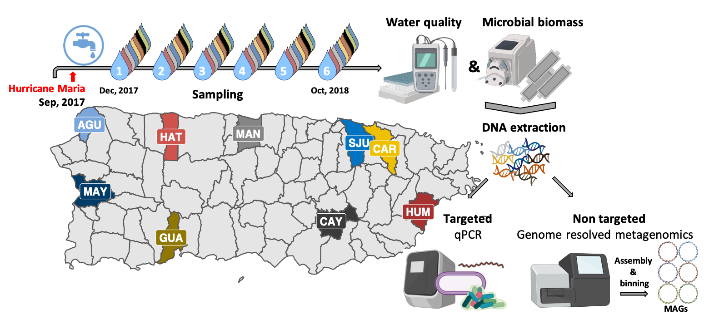

Microbiological composition in DWS after Maria
Spatial-temporal surveys in Puerto Rico
By Maria Sevillano et al. in Drinking water quality Hurricane Maria Metagenomics qPCR
July 1, 2019

Summary
Loss of basic utilities, such as drinking water and electricity distribution, were sustained for months in the aftermath of Hurricane Maria’s (HM) landfall in Puerto Rico (PR) in September 2017. The goal of this study was to assess if there was deterioration in biological quality of drinking water due to these disruptions. This study characterized the microbial composition of drinking water following HM across nine drinking water systems (DWSs) in PR and utilized an extended temporal sampling campaign to determine if changes in the drinking water microbiome were indicative of HM associated disturbance followed by recovery. In addition to monitoring water chemistry, the samples were subjected to culture independent targeted and non-targeted microbial analysis including quantitative PCR (qPCR) and genome-resolved metagenomics. The qPCR results showed that residual disinfectant was the major driver of bacterial concentrations in tap water with marked decrease in concentrations from early to late sampling timepoints. While Mycobacterium avium and Pseudomonas aeruginosa were not detected in any sampling locations and timepoints, genetic material from Leptospira and Legionella pneumophila were transiently detected in a few sampling locations. The majority of metagenome assembled genomes (MAGs) recovered from these samples were not associated with pathogens and were consistent with bacterial community members routinely detected in DWSs. Further, whole metagenome-level comparisons between drinking water samples collected in this study with samples from other full-scale DWS indicated no significant deviation from expected community membership of the drinking water microbiome. Overall, our results suggest that disruptions due to HM did not result in significant and sustained deterioration of biological quality of drinking water at our study sites.
- Posted on:
- July 1, 2019
- Length:
- 2 minute read, 265 words
- Categories:
- Drinking water quality Hurricane Maria Metagenomics qPCR
- Tags:
- Pre print
- See Also: